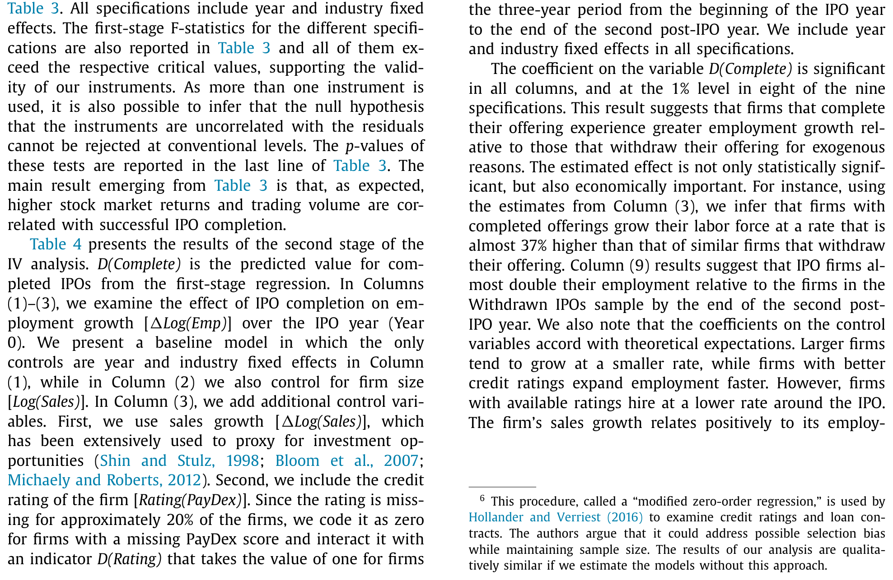
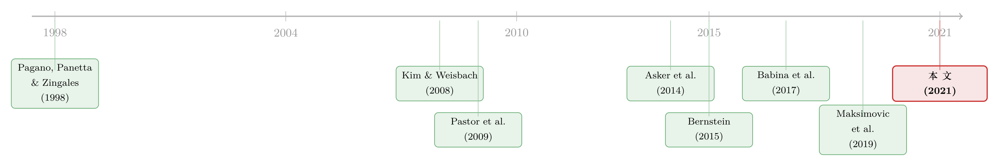

上市之后，公司为什么开始疯狂招人？
本文读的是 Borisov, Ellul & Sevilir (2021, JFE)：把一群完成 IPO 的公司，跟一群「递交了上市申请、却临时撤回」的公司放在一起比，作者发现上市会显著拉高企业用工——IPO 当年就业增速高出约 37%，到上市后第二年末，IPO 公司的员工人数相对撤回组翻了一倍。而真正把人招进来的，是并购能力的提升和向「规模化商业化」的战略转向，不是代理问题驱动的「帝国构建」。
1 一个被所有人绕过去的问题
关于「公司为什么要上市」，金融学已经写了厚厚一摞文献。我们知道，企业 IPO 是为了拿到更便宜的新资本、为了让早期股东套现退出、为了今后更方便地做并购。我们也知道上市会怎样改变它的所有权结构、信息环境、估值水平、代理冲突……
可是，有一件事一直被晾在一边没人认真问：公司上了市之后，它的「人」怎么样了？
这听上去几乎不像个问题——直觉会说，钱多了不就能多招人吗？但只要往里多想一层，你会发现答案一点都不显然。
首先，「给人融资」和「给机器融资」根本不是一回事。机器你买来就归你，人却随时可能走，中间还隔着工资谈判、雇佣保护立法这一堆劳动力市场摩擦（Matsa, 2018）。其次，一家公司选择在某个时点 IPO，往往恰恰是它准备「把产品大规模商业化」的节点（Pastor et al., 2009）——而规模化靠的可能是更高效的自动化技术，而不是更多的人手。极端一点说，上市拿到的钱如果都砸进了资本密集型的生产线，公司反而可能裁人。再者，上市本身是一次财富冲击，创始人和早期员工套现之后可能干脆走人去创业（Babina et al., 2017）；Bernstein (2015) 就发现 IPO 之后发明人会大量流失。
所以，上市对就业的影响，先验上是完全模糊的：可能增、可能减，还可能只是把低技能的产线工人换成高技能的工程师——总量不变、结构大变。
这正是这篇论文要回答的问题。
2 反事实难题：你永远看不到「如果不上市」会怎样
要回答「上市导致了就业增长」，最大的拦路虎是反事实。
你当然可以追踪一批 IPO 公司在上市前后好多年的用工轨迹，但就算你看到上市后招人确实变多了，这也说明不了什么——也许这些公司本来就处在高速扩张期，它们不上市照样会招这么多人。这是典型的自选择与反向因果。
接着，一个自然的改进是：拿 IPO 公司去跟「一直选择留在私有状态」的相似私人公司比。可这又有个绕不开的硬伤——那些公司主动选择了不上市，背后一定有某种我们观察不到的因素在驱动这个决定，而这个因素很可能同时也在影响它的用工。
但真正关键的一步在于：作者找到了一个绝妙的对照组——那些递交了 IPO 申请、却中途撤回（withdraw）、最终留在私有状态的公司。
这群公司妙在哪？它们已经走完了启动上市的全套流程——递交了初始注册声明（通常是 Form S-1），开始了询价路演。换句话说，它们和真正完成 IPO 的公司在「想上市、且具备上市条件」这件事上是高度同质的。它们和 IPO 公司之间唯一的实质区别，就是最后那一下——一个走完了，一个退回去了。
Bernstein (2015) 统计，大约 20% 的 IPO 申请最终被撤回，撤回最常见的原因是「市场环境不好」。这恰恰为识别留下了一扇门。
3 识别策略：用「市场的一张坏脸色」当工具变量
问题还没完。撤回这个动作本身可能也不干净——也许正是那些「就业前景本来就差」的公司更容易在路演中遇冷、然后撤回。如果是这样，IPO 组和撤回组的就业差异，又被内生性污染了。
于是，论文沿用 Bernstein (2015) 的思路，做了一个工具变量 (instrumental variable, IV) 分析。核心洞察是：一家公司递交申请之后那短短两个月里，整个股票市场恰好是好是坏，跟这家公司未来好几年的长期用工潜力基本无关——它纯粹是运气。但市场短期的坏脸色，却会实实在在地把一些本来能成的 IPO 逼回去。
作者用两个变量来刻画「申请后的不利市场环境」：
- 第一个：申请日之后两个月里，挑出
S&P500收益最低的 5 个交易日，取这 5 天的平均日收益率； - 第二个：同一时间窗内
S&P500平均日成交量的对数。
逻辑很清楚：市场短期暴跌、交投清淡，会显著推高一家公司撤回的概率（第一阶段），但这种「两个月的天气」不该和一家公司未来两三年究竟能招多少人有任何系统性关联（排他性约束, exclusion restriction）。这就把「上市 vs 留在私有」这一步，变成了一个近似随机分配的处理。
这一招的精髓在于：它不要求 IPO 组和撤回组事前完全一样，只要求把它们推向不同结局的那股力量是外生的。用「市场的随机坏天气」当撬棍，撬开了反事实这扇本来打不开的门。
4 数据：一套能「看见私人公司」的罕见面板
要比较 IPO 公司和留在私有的撤回公司，最大的数据障碍是——私人公司在 Compustat、CRSP 里基本是隐形的。作者的解法是请出一套不常见的数据库：NETS（National Establishment Time-Series）。
NETS 由 Walls & Associates 联合邓白氏（Dun & Bradstreet, D&B）构建。D&B 每年一月通过上亿通电话、法院文书、企业申报、邮政记录等，给全美几乎每一个营业网点（establishment）做一次普查；Walls & Associates 再把这些年度快照纵向拼接成一张面板，用 DUNS 编号唯一标识每个网点，从它「出生」一路追踪到关闭、破产。作者把网点层面的数据按「家族树」（headquarter links）汇总到母公司层面，就得到了私人公司的逐年雇佣与销售。
样本是这样搭起来的：
- IPO 起点样本来自 Thomson Reuters 的
Global New Issues (GNI)，1980–2010 年共8,569笔发行，与CRSP/Compustat交叉验证后留下7,953笔； - 匹配进 NETS（受 DUNS 覆盖率约 50% 限制，期间收窄到 1990–2010）后得到 NETS IPOs 样本：
2,914家； - 对照组「撤回 IPO」经手工在 Hoover's 补齐 DUNS，得到 撤回样本：
536家； - 此外，为做需要公司财务变量的渠道分析，另用
Compustat算出 IPO 当年用工变化，得到 Compustat IPOs 样本：3,654家。
作者还做了一件踏实事：把 NETS 的雇佣、销售数据和 Compustat 对账，雇佣相关系数 0.61、销售 0.55，都在 1% 水平显著，且大公司对得更准。这给整套结论垫了底。
5 主要结果：上市当年招人提速 37%，两年翻一倍
IV 分析的结果干脆利落：完成发行的公司，在 IPO 之后经历了显著更高的就业增长。
具体来说——IPO 公司在上市当年的就业增速，比撤回组高出近 37%；而到上市后第二年末，IPO 公司的员工人数相对那些撤回了发行、留在私有状态的公司，整整翻了一倍。只要相信「申请后那两个月的短期市场环境，跟公司长期用工潜力无关」，这就构成了上市对就业的因果效应。

Table 3: . All specifications include year and industry fixed
这个量级是相当可观的。它说明 IPO 不只是一次融资事件或估值事件，而是一个会实质性改写企业用工政策的转折点。也正因为如此，那些「小企业是美国就业增长主引擎、尤其在拿到公开市场融资之后」的坊间说法，第一次有了干净的微观因果证据来支撑。
（顺带一提，关于「上市这一步本身如何被同行牵引」，可参见《对手刚上市，我要不要也赶紧上？》；而关于上市后的财富冲击如何反过来作用在员工身上，可参见《股票替你赚的钱，悄悄偷走了你下个月的力气》。）
6 不是人人都招人：谁招得最猛？
如果上市真的是通过「放松融资约束」来招人的，那这个效应就应该在最缺钱、最依赖外部融资的地方最强。接着，一个自然的问题是：哪些公司招得最猛？
作者用两个行业特征来切：外部股权依赖度 (external equity dependence) 和 人力资本密集度 (human capital intensity)。IV 结果显示，上市拉动就业的效应，集中出现在外部融资依赖更重、以及人力资本更密集的行业里。
然后是一个更漂亮的交叉：在人力资本密集型行业里，越年轻的公司上市后就业增长越强。年龄在这里是融资约束的代理——越年轻越受约束。这就坐实了那条逻辑：上市真正帮到的，是那些原本「想招高技能人才却招不起」的、被约束卡住的年轻公司，让它们终于有能力把工程师、程序员请进门。
（这一点和「人才本身就是稀缺资源」的视角相互呼应，可参见《抽签抽出来的创新力：H-1B 签证如何决定一家创业公司的生死》。）
7 钱、人、并购，还是代理问题？——把渠道一个个掀开
确认了「上市确实招人」之后，但真正关键的一步在于：到底是通过什么招进来的？ 这部分作者只用完成 IPO 的样本来做（因为撤回组拿不到公司层面变量），所以只能算「提示性」证据，但每一刀都切得很有信息量。
第一刀，融资约束的放松——而且要分长短期。 上市带来两种放松：一是发行新股拿到的即时资金（短期约束），二是上市后信息透明度提升、债权债务双方信息不对称下降，从而压低长期资本成本（长期约束，Pagano et al., 1998）。作者用「出售原始股份的所得」度量短期放松，用「信贷成本的下降」度量长期放松。结果很有意思：出售原始股只在 IPO 当年和就业相关，效应短命；而信贷成本的下降则在长达上市后两年的时间里都和就业增长显著相关。换句话说，把人长期留下来招进来的，更多是「便宜了的债」，而非「一次性的股权募资」。（关于信贷可得性如何传导到用工，正是 Benmelech et al. (2015) 的主题。）
第二刀，向商业化的战略转向。 公司可以为了「把创新大规模商业化」而上市，这就需要更多销售、生产、营销岗位（Pastor et al., 2009）。作者用招股书里披露的募资用途来检验：那些声明要把 IPO 所得用于「资助销售与生产」的公司，在 IPO 当年就业增长更猛。这说明至少在短期，一次战略转向确实能解释一部分招人。
第三刀，并购渠道。 上市给了公司两样并购利器——用自家股票当「收购货币」，以及更便宜地为现金收购融资。作者发现，现金型和股票型并购都和上市后的就业增长显著正相关，其中股票型并购尤其关键，因为没有公开上市它几乎做不成。并购能直接带来就业，因为买下一家公司就意味着接手并留住对方的一部分员工。
最后一刀，代理问题——这是反转所在。 一个老担心是：上市后所有权与控制权分离，经理人可能为了「帝国构建」（empire-building）去做毁损价值的并购，这也会推高就业，但那是坏的就业。作者怎么把好坏分开？他看并购的公告收益：他发现，和就业增长正相关的，恰恰是那些公告收益为正的并购（创造价值的那类），而非负收益的那类。再加上内部人持股、机构持股这些抑制代理问题的机制，与就业增长的关系都很弱。三刀合起来，结论是：代理冲突在上市后的就业增长里，作用即便有，也很微小。 招人是因为公司在创造价值地扩张，不是因为经理人在乱花钱。
8 文献脉络：从「为什么上市」到「上市改变了谁」
把这篇论文放回它所在的研究长河里，脉络就清楚了。
最早的一支，是回答「公司为什么要上市」。Pagano, Panetta & Zingales (1998) 用意大利数据开了头，Mikkelson et al. (1997)、Kim & Weisbach (2008)、Celikyurt et al. (2010) 一路把动机厘清：融资、套现、再加上「上市便于做并购」。
接着，研究的重心从「为什么上市」转向「上市改变了什么」。Pastor et al. (2009) 提出上市是商业化战略的转折；Asker et al. (2014) 指出上市公司投资更短视、对机会响应不足——这暗示 IPO 公司可能招人更少；而 Maksimovic et al. (2019) 却发现上市公司比匹配的私人公司就业增长更快。两边打架，恰恰说明这个问题悬而未决。
但真正在方法上给本文铺路的，是 Bernstein (2015)：他用「撤回 IPO 当对照 + 申请后市场环境当工具变量」研究上市对创新的影响，本文几乎原样借来了这套识别。与此并行，Babina et al. (2017) 发现上市会让创业型员工出走去创业，Bakke et al. (2012) 发现退市会减少就业，Kim et al. (2019) 发现 SEO 让中国公司能招高技能员工——它们共同把「上市/融资 ↔ 劳动力」这条线越画越实。

本文站在这条脉络的交汇点上：它第一次系统性地、用外生变异去回答「上市对员工这个关键利益相关方意味着什么」，并把「钱、人、并购、代理」四条渠道逐一掀开，给出了这条链路的微观基础。
评论与延伸（Q&A + 研究方向）
Q：用「撤回 IPO」当对照组，真的比「匹配私人公司」更干净吗？
是的，干净在「同质性」上。撤回组已经走完了递交注册、启动询价的全套动作，说明它们和 IPO 公司在「想上市且够格上市」上高度相似；而主动选择永不上市的私人公司，背后藏着不可观测的选择。但撤回本身仍可能内生（差公司更易遇冷被撤），所以作者没有直接比 IPO vs 撤回，而是在其上再套一层 IV，用外生的市场环境来驱动撤回——这才是识别的核心。
Q：把「申请后两个月的市场环境」当工具变量，排他性约束站得住吗？
这是全文最该被拷问的地方。它要求：短期市场天气只通过「是否撤回」影响就业，不走任何别的路。担忧在于，市场情绪可能有持续性——申请期赶上熊市，未来两三年的宏观环境也许同样低迷，从而直接压低用工。作者用年份和行业固定效应、并刻意取「最差 5 天」这种高频短窗来缓解，但这条假设本质上无法被直接检验，只能靠论证可信度。
Q：37% 和「翻一倍」是不是太大了？
量级确实抢眼，但要记住分母。样本里 IPO 公司中位年龄约
8年、规模偏小，年轻小公司从一个受约束的状态被松绑，基数低、弹性大，增速自然显著。作者也坦承Compustat子样本里的公司更老更大、更可能有 VC 背书，因此可能低估了初始公开融资对更年轻、更小公司的重要性。
Q：就业是「真增长」还是只是并购「买」来的人头？
两者都有，但作者把它们分开看了。并购确实是渠道之一（买下一家公司就接手了它的员工），但融资约束放松、商业化转向这些「内生增长」渠道也独立存在。更重要的是，与就业正相关的是创造价值（正公告收益）的并购，而非毁损价值的并购——所以这不是单纯的「规模虚胖」。
Q：上市明明会让创业员工出走（Babina et al., 2017），怎么总量还涨？
这正是先验模糊的来源。Bernstein (2015) 给过答案的雏形：发明人虽然流失，但 IPO 公司有钱吸引新人进来。本文在总量层面证实了「进 > 出」：流失被更强的招聘（尤其在人力资本密集行业、年轻公司）盖过了。结构在变，但净额是正的。
Q：这对「公共市场让公司变短视」的争论意味着什么？
它给了 Asker et al. (2014) 那一派一个反例：至少在用工这件事上，上市公司不但没有因短视而收缩，反而扩张，而且扩张是价值创造型的。这更接近 Maksimovic et al. (2019) 的发现。当然，就业增长本身不等于长期价值最大化，两者并不必然一致。
几个可能的研究问题与提案
1）把镜头从「数量」转向「价格」：上市后工资结构怎么变？
【经济故事】本文量了「招了多少人」，但没量「给多少钱、招的是谁」。如果上市主要拉动的是高技能岗位，那么 IPO 应当抬高企业内部的技能溢价、拉大工资分布。这能把「上市 → 不平等」这条因果链补全。 【可行性】中。NETS 没有个体工资，需要匹配 LEHD（雇主-雇员链接）或领英式履历数据；识别可沿用本文的撤回-IV 框架，难点在工资数据与 IPO 样本的匹配覆盖率。
2）上市与公司债市场：IPO 之后，企业的债券发行与信用利差怎么走？
【经济故事】本文把「信贷成本下降」认定为长期招人的主渠道，却没直接拆开债务端。上市带来的透明度提升，理应压低后续债券发行的利差、延长债务期限——这正好接到「外资持有人/信用市场」的关切上。 【可行性】高。把 IPO 样本匹配到
Mergent FISD/TRACE，看上市前后首次公募债发行的利差、评级、期限变化，用本文同款 IV 当外生冲击，数据现成、识别清晰。
3）外资持有人会不会改变「上市 → 招人」的弹性？
【经济故事】如果上市后进来的是偏好短期回报、流动性导向的外资机构，企业的用工扩张可能被「短期主义」削弱；反之，长期型外资可能放大它。这把本文的代理问题检验，升级成「投资者类型异质性」的检验。 【可行性】中。需匹配 13F/FactSet 机构持股并区分外资/内资、长期/短期；难点在于持股结构本身内生于上市，需找持股结构的外生变异（如指数纳入）做二阶识别。
4）撤回之后呢？那 536 家公司的长期命运。
【经济故事】本文把撤回组当对照，但撤回本身是个值得研究的结局。这些「差点上市」的公司后来是再上市、被并购、还是慢慢凋零？它们的就业轨迹能告诉我们「错过公共市场窗口」的长期代价。 【可行性】高。NETS 已能追踪私人公司直到关闭，直接做撤回组的生存分析与就业轨迹即可，数据无需额外采购。
最后说说我作为评述者的判断。
这篇论文的贡献是扎实且具体的：它第一次把「上市」和「员工」这两个一直被分开研究的对象，用一个干净的准实验缝在了一起，并且没有停在「上市会招人」这个相关性上，而是把钱、人、并购、代理四条渠道逐一拆开、分出主次——这种「先建立因果、再解剖机制」的结构，是它最值得学的地方。
我的主要担心仍落在识别上。整套结论的可信度，系于「申请后两个月的市场环境与公司长期用工潜力无关」这条排他性约束，而它本质上无法直接证伪；如果市场情绪具有持续性，工具变量就可能通过宏观周期这条暗道直接影响就业。其次，渠道分析只用了完成 IPO 的样本，作者自己也诚实地标注为「提示性」，它们与上市决策同样可能内生，因此「代理问题作用微小」这个结论，我会读作「在现有证据下没找到强代理证据」，而非「代理问题被排除」。
后续我最想看到的，是把这套框架推进到价格和债务两端：上市究竟改变了招进来的是谁、给多少钱，以及它如何重塑企业在公司债市场上的融资条件。把「招了多少人」延伸到「招了什么人、用什么钱招的」，这条链才算真正讲完。
参考文献
- Asker, J., Farre-Mensa, J., Ljungqvist, A. (2014). Corporate Investment and Stock Market Listing: A Puzzle? Review of Financial Studies 28(2), 342–390.
- Babina, T., Ouimet, P., Zarutskie, R. (2017). Going Entrepreneurial? IPOs and New Firm Creation. Working Paper.
- Bakke, T.-E., Jens, C. E., Whited, T. M. (2012). The Real Effects of Delisting: Evidence from a Regression Discontinuity Design. Finance Research Letters 9(4), 183–193.
- Benmelech, E., Bergman, N. K., Seru, A. (2015). Financing Labor. Working Paper.
- Bernstein, S. (2015). Does Going Public Affect Innovation? Journal of Finance 70(4), 1365–1403.
- Borisov, A., Ellul, A., Sevilir, M. (2021). Access to Public Capital Markets and Employment Growth. Journal of Financial Economics 141(3), 896–918.
- Celikyurt, U., Sevilir, M., Shivdasani, A. (2010). Going Public to Acquire? The Acquisition Motive in IPOs. Journal of Financial Economics 96(3), 345–363.
- Kim, W., Weisbach, M. S. (2008). Motivations for Public Equity Offers: An International Perspective. Journal of Financial Economics 87(2), 281–307.
- Maksimovic, V., Phillips, G., Yang, L. (2019). Do Public Firms Respond to Industry Opportunities More Than Private Firms? The Impact of Initial Public Offerings. Working Paper.
- Pagano, M., Panetta, F., Zingales, L. (1998). Why Do Companies Go Public? An Empirical Analysis. Journal of Finance 53(1), 27–64.
- Pastor, L., Taylor, L. A., Veronesi, P. (2009). Entrepreneurial Learning, the IPO Decision, and the Post-IPO Drop in Firm Profitability. Review of Financial Studies 22(8), 3005–3046.